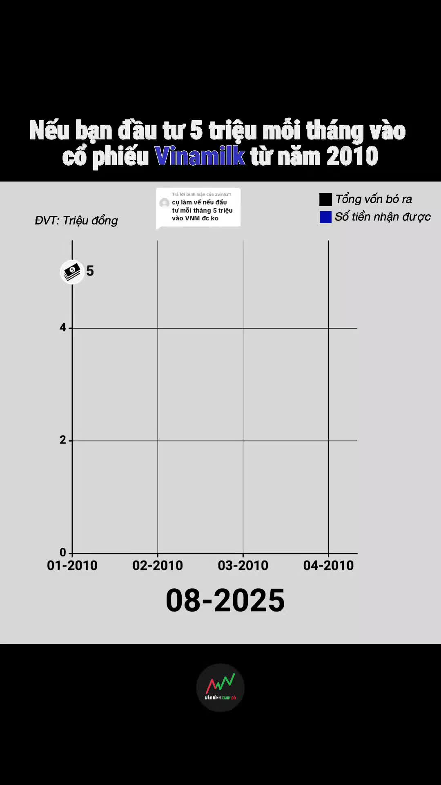
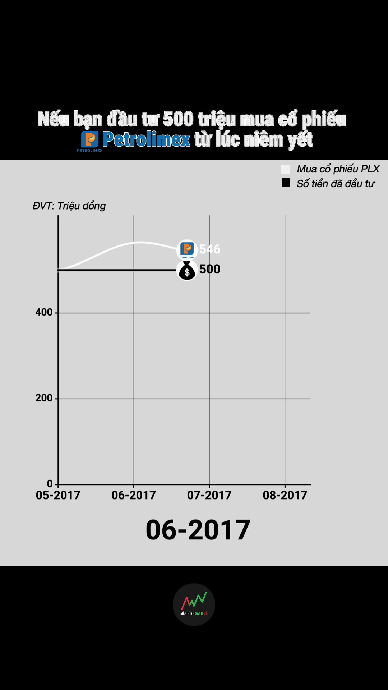
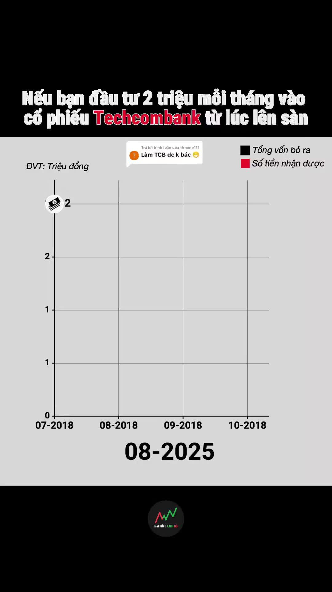
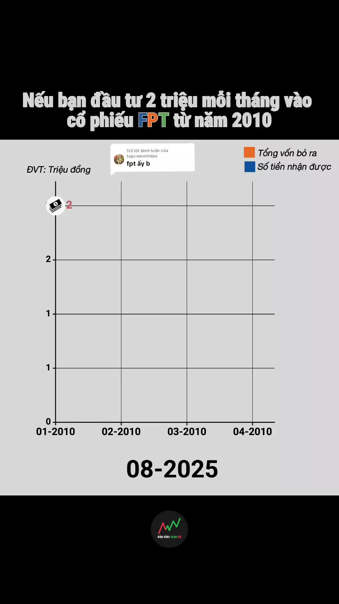
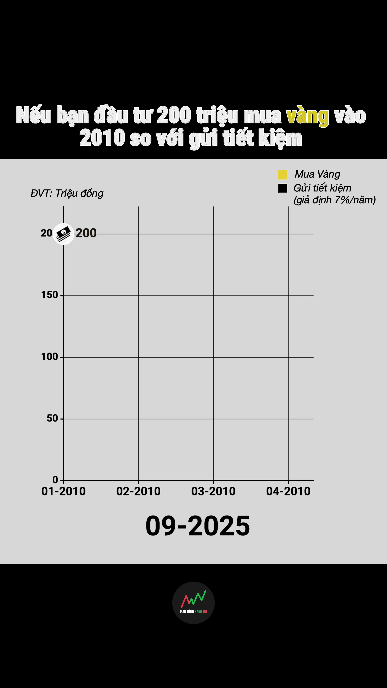
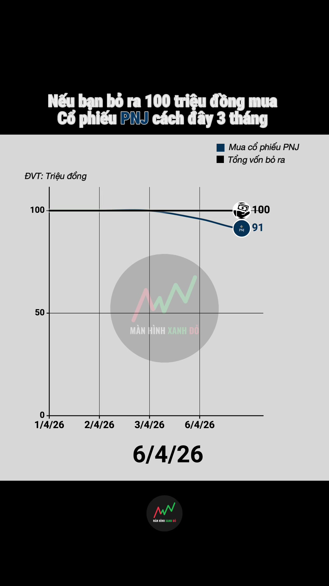
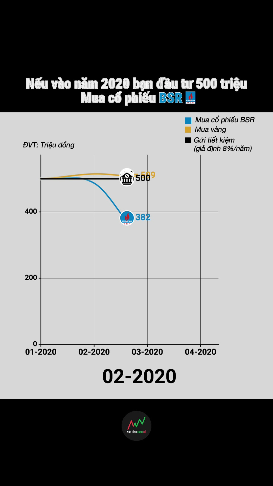
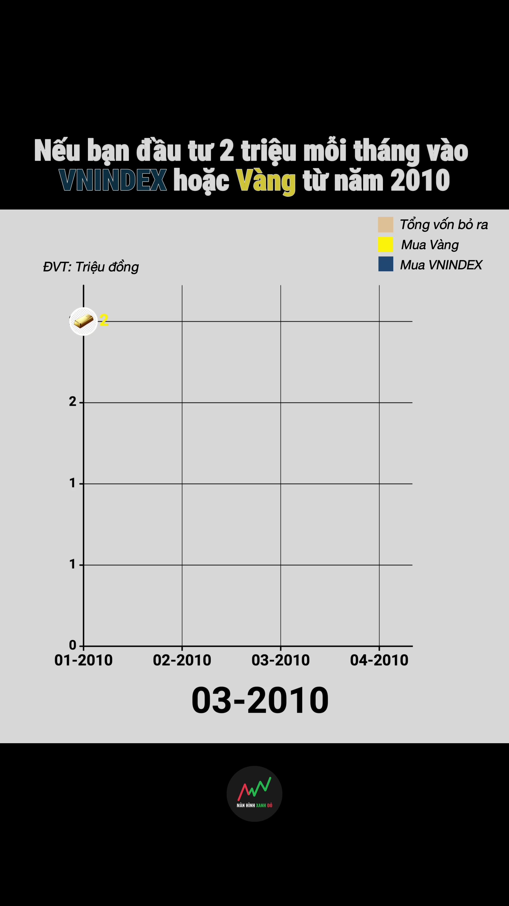
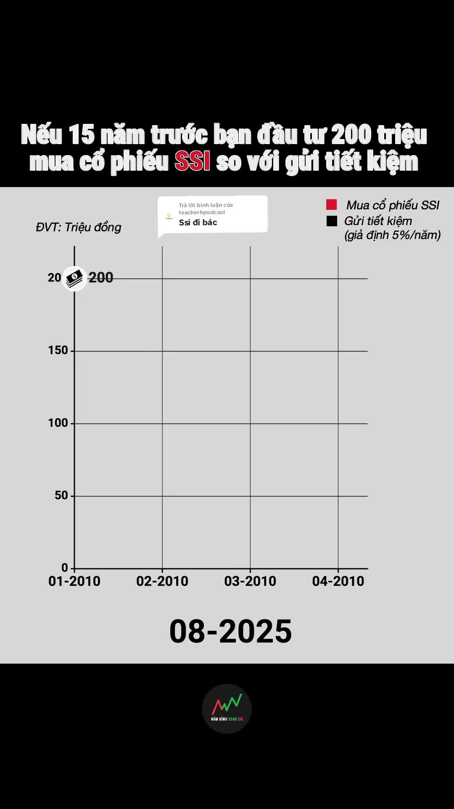
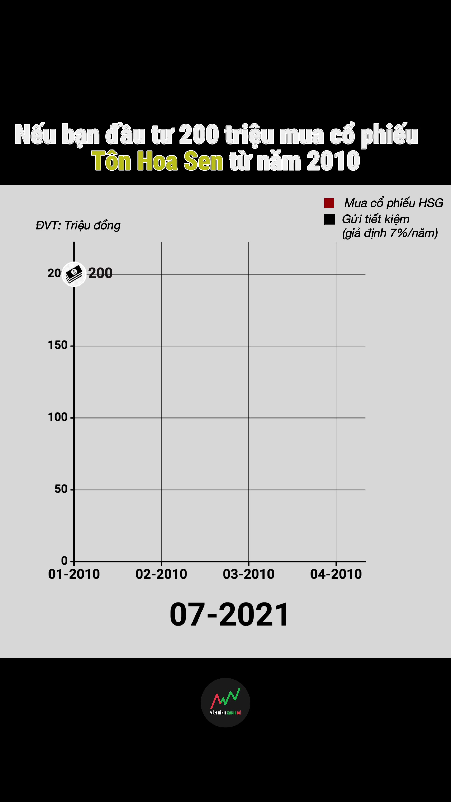

Cập nhật 2026-11-12 · TikTok: @manhinhxanhdo_official · Nguồn: dữ liệu công khai (yt-dlp + trang profile)
Nhận định
Bối cảnh: một format, một tháng bùng nổ, rồi chậm dần
"Màn hình xanh đỏ" (@manhinhxanhdo_official): 13,1k follower, 56 video, 4,5 tr tổng view. Gần như mọi video là cùng một khuôn: biểu đồ đường chạy theo tháng, trả lời câu hỏi "Nếu bạn đầu tư X vào Y từ năm Z thì giờ có bao nhiêu?", không giọng đọc, nhạc trend, dài khoảng 60 giây.
Vì format cố định, khác biệt view giữa các bài chủ yếu đến từ đề bài (tài sản nào, bỏ một lần hay góp đều, mốc năm) và thời điểm, không đến từ cách dựng.
Bio dẫn về "cộng đồng đầu tư", và kênh có 2 video quảng bá IPO TCBS: đây là kênh kéo khách cho môi giới, không phải kênh giáo dục thuần.
Mẫu nội dung đáng thử
View dồn vào vài video: 4/56 video vượt 246k (10× trung vị 25k) mang về 55% tổng view; riêng Vinamilk 5 triệu/tháng từ 2010 đạt 1,5 tr.
Đặc điểm của video top (đã xem khung hình 5 video top): đề bài là một mã quen thuộc với người không chơi chứng khoán (Vinamilk, FPT, Techcombank, Petrolimex, vàng), số tiền dễ hình dung (2–5 triệu/tháng hoặc 200–500 triệu), mốc thời gian dài (từ 2010 hoặc từ lúc niêm yết), và có đường đối chứng (vốn bỏ ra, gửi tiết kiệm). Khuôn này có ở cả bài sàn, nên bản thân nó chưa phải yếu tố phân biệt.
Cặp đối chứng (cùng loại, cách nhau dưới 30 ngày, cùng độ dài): Vinamilk 5 tr/tháng (1,5 tr) với Vingroup 2 tr/tháng (28,7k); Vàng 200 tr từ 2010 (163k) với "Quay lại 2020, có chọn MB Bank không?" (2,7k); Petrolimex (385k) với "ngân hàng quốc doanh" (9,6k). Bài sàn có tiêu đề mơ hồ (không ghi số tiền, gộp nhiều mã) hoặc là mã kết quả đã đoán được. Đây là giả thuyết từ tiêu đề, chưa xem khung hình bài sàn.
Tương tác thấp: trung vị 1,1% (like + bình luận + chia sẻ + lưu trên view). Video đã viral cũng chỉ 1,3–2,4%. Format "xem cho biết" dễ lướt hết nhưng ít lý do để lưu.
Loại hình nào thắng
Chưa có loại nào nổi trội rõ (chênh lệch còn trong mức ngẫu nhiên). Tích sản định kỳ: 18 video, trung vị 26,8k, 3 hit (17%), 2,1× bài cùng thời. Bỏ một lần: 32 video, trung vị 27,9k, 1 hit (3%), 0,9×. Khác (IPO, câu nói hay, sự kiện): 6 video, trung vị 6,9k, chưa có hit.
Chưa tách được thời điểm: cả 3 hit của nhóm tích sản đều ở tháng đầu T8/2025 (8 video, trung vị 109k). Đến T3/2026, 7 video tích sản chỉ có trung vị 11,7k, thấp hơn trung vị kênh. Lợi thế của "góp mỗi tháng" có thể chỉ là lợi thế của giai đoạn kênh mới được đẩy.
Nhóm Khác (IPO, câu nói hay, meme): 11% số video nhưng chỉ khoảng 1% tổng view, cả 6 bài dưới trung vị kênh. Gợi ý rằng khi lệch khỏi khuôn biểu đồ thì view rơi về sàn, nhưng 6 bài vẫn là mẫu nhỏ.
Nhịp đăng
Trung bình 1,1 video/tuần nhưng không đều: T8/2025 đăng 20 video, sau đó 2–9 video/tháng, nghỉ hẳn T4–T6/2026, rồi 1 video ngày 23/07/2026 (PNJ, 139k). Đã 111 ngày không đăng.
Hit theo tháng: 3/20 ở T8/2025, sau đó chỉ 1 hit (Petrolimex, T1/2026). Trung vị view theo tháng giảm từ khoảng 28k xuống 13–15k (chưa so ở cùng tuổi bài).
Giờ và thứ: chưa nhóm nào nổi trội. 26/56 video đăng lúc 23–5h có trung vị 16,6k, thấp nhất, nhưng đây chỉ là tương quan.
Độ dài
Gần như mọi bài dài 60–62 giây. Trong nhóm Bỏ một lần, ≤60s (10 video, trung vị 29k) và >60s (22 video, 28k) gần như bằng nhau, nên độ dài không phải yếu tố ở kênh này. Bài PNJ 22 giây gần đây đạt 139k, nhưng chỉ là 1 mẫu.
Áp dụng cho DSC
Làm loạt "Nếu bạn đầu tư… thì giờ ra sao" bằng dataviz 9x16, khoảng 45–60 giây. Quan sát: 4 video lớn nhất kênh đều dùng khuôn này với mã quen thuộc + số tiền dễ hình dung + đường đối chứng. Chưa tách được: mã nổi tiếng hay thời điểm kênh mới. Thử nghiệm: 6 tập, 3 mã quen với người ngoài thị trường (VNM, FPT, vàng) và 3 mã ngách, ghi trước phân loại; đo tỷ lệ bài vượt 10× trung vị và lưu/view sau 7 ngày.
Tạo khác biệt bằng độ tin cậy: ghi nguồn giá, có tính cổ tức/chia tách hay không, lãi tiết kiệm giả định. Đối thủ không ghi những điều này, và đang bị dùng để kéo khách IPO. Thêm thẻ kết luận 3 giây cuối (lãi %, so với gửi tiết kiệm và lạm phát) để tăng lý do lưu. Chỉ số: lưu/view so với mức 1,1% tương tác của đối thủ.
Thử góp đều (DCA) với bỏ một lần trên cùng một mã để tách yếu tố thời điểm mà kênh đối thủ chưa tách được. Hai tập cách nhau dưới 1 tuần, cùng độ dài; so view và chia sẻ/view sau 7 ngày.
Nhận đề bài từ bình luận ("Trả lời @…") như đối thủ: rẻ và tạo vòng lặp tương tác. Chưa có số liệu cho thấy dạng trả lời bình luận có view cao hơn, chỉ nên dùng như cách lấy ý tưởng.
Tham gia ngay cộng đồng để không bỏ lỡ cơ hội đầu tư 🚀🚀🚀
👇👇
56 video, đăng từ 2025-08-15 đến 2026-07-23. Giờ tính theo giờ Việt Nam.
⚠ Chưa ghi nhận video mới trong 111 ngày trong dữ liệu thu thập (video gần nhất 2026-07-23).
Follower13k60k tim
View trung vị / video25kcao nhất 1,5 tr
Tương tác trung vị1,1%like+bình luận+chia sẻ+lưu / view
Video / tuần1,10 video trong 30 ngày qua
Điểm chính
View tích lũy trung vị giảm: 28k ở 3 tháng có bài đầu → 15k ở 3 tháng có bài cuối; chưa so ở cùng tuổi bài
4/56 video đạt từ 246k view (10× trung vị kênh) và mang về 54,8% tổng view; top 3 chiếm 48,9%
Số hit (từ 246k view) theo tháng gần nhất: 1/8 → 0/2 → 0/8 → 0/1
Không loại nội dung nào nổi trội rõ: chênh lệch giữa các nhóm còn trong mức ngẫu nhiên (trung vị 6,9k–28k)
Bỏ một lần, giờ ra sao chiếm 57,1% số video nhưng chỉ mang về 40,9% tổng view
Đăng 1,1 video/tuần; tháng dày nhất T8/25 có 20 video; 30 ngày qua: 0 video
Không mức độ dài nào nổi trội rõ: chênh lệch giữa các nhóm còn trong mức ngẫu nhiên (trung vị 8,9k–30k)
Không khung giờ nào nổi trội rõ: chênh lệch giữa các nhóm còn trong mức ngẫu nhiên (trung vị 17k–69k)
Không thứ nào nổi trội rõ: chênh lệch giữa các nhóm còn trong mức ngẫu nhiên (trung vị 13k–95k)
Video nào thắng?
Top 1 đạt 1,5 tr view, gấp 61× một video bình thường của kênh
Tích sản định kỳBỏ một lần, giờ ra saoKhác (IPO, quote, sự kiện)
1

Trả lời @zvinh31 Nếu bạn đầu tư 5 triệu đồng mỗi tháng vào cổ phiếu Vi2025-08-22 · 60s · Tích sản định kỳ
1,5 trgấp 61× trung vị
2

Nếu bạn đầu tư 500 triệu vào cổ phiếu Petrolimex (PLX) từ lúc niêm yết2026-01-21 · 62s · Bỏ một lần, giờ ra sao
385kgấp 16× trung vị
3

Trả lời @tlrmme111 Nếu bạn đầu tư 2 triệu đồng mỗi tháng vào ngân hàn2025-08-24 · 62s · Tích sản định kỳ
319kgấp 13× trung vị
4

Trả lời @topcomentdao Nếu bạn đầu tư 2 triệu đồng mỗi tháng vào cổ ph2025-08-21 · 60s · Tích sản định kỳ
268kgấp 11× trung vị
5

Nếu bạn bỏ ra 200 triệu đồng mua vàng từ năm 2010 thì hiện tại sẽ có b2025-09-08 · 62s · Bỏ một lần, giờ ra sao
163kgấp 6,7× trung vị
6

Nếu bạn đầu tư 100 triệu vào cổ phiếu PNJ cách đây 3 tháng thì hiện tạ2026-07-23 · 22s · Bỏ một lần, giờ ra sao
139kgấp 5,6× trung vị
7

Nếu cách đây 5 năm bạn đầu tư 500 triệu vào cổ phiếu BSR thì hiện tại 2026-03-07 · 46s · Bỏ một lần, giờ ra sao
138kgấp 5,6× trung vị
8

So sánh nếu bạn đầu tư 2 triệu đồng mỗi tháng giữa vàng và chỉ số VNIN2025-08-19 · 60s · Tích sản định kỳ
123kgấp 5,0× trung vị
9

Trả lời @teacherhpodcast Nếu bạn đầu tư 200 triệu mua cổ phiếu của SS2025-08-31 · 62s · Bỏ một lần, giờ ra sao
115kgấp 4,7× trung vị
10

Nếu bạn đầu tư 200 triệu vào cổ phiếu Hoa Sen từ 2010 thì hiện tại kết2025-09-14 · 62s · Bỏ một lần, giờ ra sao
110kgấp 4,5× trung vị
Vạch đứt: trung vị kênh 25k view
Họ dựng video thế nào?
Đổi hình mỗi 5,7 giây, đọc 75 từ/phút, đoạn transcript phủ 94,8% thời lượng (không đo khoảng nghỉ)
Mẫu 5 video top; chưa có đối chứng trung bình/thấp, không suy ra nguyên nhân thành công · khung hình và lời thoại tách bằng ffmpeg + whisper
Nhịp hình5,7s/beat6 beat/phút · có thể lẫn chữ di chuyển
3 giây đầu0 beattrung vị các video top
Kiểu vào hìnhcắt cứng41,9% số beat
Phụ đềkhông thấykhông có dải chữ đổi đều
Tốc độ đọc75 từ/phútđoạn transcript phủ 94,8% thời lượng (không đo khoảng nghỉ)
Độ to-17,1 LUFSngôn ngữ: en
Hình ảnh
Một khuôn duy nhất cho mọi video: biểu đồ đường "chạy theo thời gian" trên nền xám nhạt, khung dọc 9:16 có hai dải đen trên/dưới. Đã xem grid của Vinamilk (1,5 tr), Petrolimex (385k) và Vàng 2010 (163k): cùng bố cục, chỉ đổi màu đường và icon.
Hai đường so sánh: "Tổng vốn bỏ ra" / "Số tiền đã đầu tư" / "Gửi tiết kiệm (giả định 7%/năm)" màu đen, đối với tài sản được chọn (xanh cho cổ phiếu, vàng cho vàng, trắng cho PLX). Đầu mỗi đường có icon (túi tiền, logo công ty, thỏi vàng) kèm con số triệu đồng nhảy liên tục.
Trục thời gian tự giãn: lúc đầu chỉ có vài tháng, càng chạy càng thu nhỏ để chứa cả giai đoạn 10–15 năm. Ngay dưới biểu đồ là bộ đếm tháng/năm cỡ lớn (01-2010 → 07-2025), nhảy khoảng 2 tháng mỗi 0,5 giây.
Không có người thật, không cắt cảnh, không chèn footage. Logo kênh nhỏ ở dải đen dưới. cuts = 0, còn medianBeat 1,4–16 giây chỉ đo được lúc trục co hoặc đường nhảy vọt; về thực chất video là một cảnh liên tục 60 giây.
Chữ và phụ đề
Tiêu đề cố định ở dải đen trên, 2 dòng chữ trắng đậm viền đen, tên tài sản tô màu ("Nếu bạn đầu tư 5 triệu mỗi tháng vào cổ phiếu Vinamilk từ năm 2010"). Câu này trùng tiêu đề video và đứng yên suốt video.
Không có phụ đề, không có thẻ kết luận. Ghi chú "ĐVT: Triệu đồng" và chú thích hai đường ở góc trên.
Khung đầu (hook.jpg) đã là câu hỏi + biểu đồ ở mốc 0 nên người lướt thấy ngay đề bài; đáp án chỉ lộ ra khi xem tới cuối.
Lời và nhịp kể
Không có giọng đọc. Whisper chỉ nghe ra lời nhạc tiếng Anh ("Lose Control", "Money Talks"…); câu "Hãy subscribe cho kênh Ghiền Mì Gõ" trong video Vàng là ảo giác của whisper trên đoạn chỉ có nhạc, không phải lời trong video. Kênh dùng nhạc trend, chỉ 20% video dùng âm thanh gốc.
Cấu trúc kịch bản nằm hết trong dữ liệu: đề bài (số tiền, mã, năm bắt đầu) → đồng hồ chạy → khoảng cách giữa hai đường mở rộng hoặc đảo chiều → con số cuối. Sức hút đến từ việc chờ xem đường tài sản có vượt hay rơi dưới đường vốn không (PLX lên 770 rồi về quanh 500, Vinamilk lên 2.000 rồi đi ngang 1.500).
Nhiều tiêu đề mở bằng "Trả lời @…": kênh nhận mã cổ phiếu khán giả đặt trong bình luận rồi làm video, và cuối caption kêu gọi "muốn mình làm mã nào thì comment".
Độ dài gần như cố định 60–62 giây (trung vị 62 giây), tức kênh kéo trục thời gian cho vừa giới hạn này chứ không theo độ dài câu chuyện.
Áp dụng cho DSC
Khớp với format dataviz (video-producer, visual.type: line + counter): đường so sánh hai kịch bản, bộ đếm ngày lớn, số liệu nhảy ở đầu đường. Có thể dựng ngay từ CSV giá điều chỉnh.
Giữ: đề bài cụ thể trong 1 câu (số tiền + mã + năm), hai đường đối chứng (cổ phiếu và tiết kiệm/vàng), không lộ kết quả trước, nhận mã từ bình luận.
Thay hoặc thêm: ghi nguồn giá và cách tính (có tính cổ tức, chia tách không; lãi tiết kiệm giả định bao nhiêu) ở góc màn hình, vì đối thủ không ghi; thêm 1 thẻ kết luận 3 giây cuối (lãi bao nhiêu %, so với tiết kiệm) để người xem có thứ để lưu/chia sẻ; cân nhắc giọng đọc ngắn ở 3 giây đầu để thử so với bản chỉ có nhạc.
I need to know Could you be the one to call When I lose control Could you be the one to call When I lose control When I lose control When I lose control When I lose control When I lose control When I lose control Could you be the one to call When I lose control I know I can be destructive And I can change
Fading out on the edge of paradise Every inch on your skin is the holy grid I've gotta find Only you can set my heart on fire, on fire Yeah, I'll let you set the pace Cause I'm not thinking straight My head spinning around, I can't see clear no more What are you waiting for? Love me like you do, love me like you do Love me like you do, love me like you do Touch me like you do, touch me like you do What are you waiting for?
I have no excuse I just want you to use me Take me and abuse me I got no temples I make a trade with you Do anything you want me to Money talks, money talks Dirty cash, I want you And dirty cash, I need you, oh Money talks, money talks Dirty cash, I want you Dirty cash, I need you, oh I'm dirty cash, the one that you ask for I'm right.
Hãy subscribe cho kênh Ghiền Mì Gõ Để không bỏ lỡ những video hấp dẫn Hãy subscribe cho kênh Ghiền Mì Gõ Để không bỏ lỡ những video hấp dẫn Hãy subscribe cho kênh Ghiền Mì Gõ Để không bỏ lỡ những video hấp dẫn
Cách đọc các biểu đồ so sánh nhóm (loại nội dung, giờ, thứ, độ dài): mỗi hàng là một nhóm video. Dải xám là nửa số video ở giữa (P25–P75), vạch đậm là trung vị. Trục không phải view thô mà là view của video chia cho trung vị các video khác đăng trong ±7 ngày: 1× nghĩa là ngang bài cùng thời, nên một nhóm không "thắng" chỉ vì rơi vào tuần kênh đang viral. Nhóm chỉ được tô màu khi vượt nhóm kế tiếp từ 1,3 lần và chênh lệch khó là ngẫu nhiên; không có nhóm nào tô màu nghĩa là dữ liệu chưa đủ để nói nhóm nào hơn.
Loại nội dung nào thắng?
Không loại nội dung nào nổi trội rõ: chênh lệch giữa các nhóm còn trong mức ngẫu nhiên (trung vị 6,9k–28k)
View mỗi video theo nhóm nội dung
Bỏ một lần, giờ ra sao
0,9×28k · 32 video
Tích sản định kỳ
2,1×27k · 18 video
Khác (IPO, quote, sự kiện)
0,2×6,9k · 6 video
0,1×0,3×1×3×
Trục: gấp mấy lần bài cùng thời (thang log) · số mờ: view trung vị · vạch đứt: bằng các bài đăng cùng thời (1×)
Công sức đổ vào đâu, view đến từ đâu?
Bỏ một lần, giờ ra sao chiếm 57,1% số video nhưng chỉ mang về 40,9% tổng view
% số video% tổng view
Tích sản định kỳ
32,1% video → 58,0% view
Bỏ một lần, giờ ra sao
57,1% video → 40,9% view
Khác (IPO, quote, sự kiện)
10,7% video → 1,1% view
Kiểm tra bằng chứng
View là số tích lũy trong cache, không phải view ở cùng tuổi bài; bài dưới 7 ngày tuổi lúc thu thập còn đang tích view và được đếm riêng. "So với bài cùng thời" = view chia cho trung vị các bài khác đăng trong ±7 ngày (nới tới ±30 ngày nếu thiếu mẫu); cách này giảm nhiễu giai đoạn nhưng không chứng minh nhân quả. Hit = bài đạt từ 10× trung vị kênh. Nhóm dưới 5 bài là ít mẫu; không chọn làm nhóm dẫn đầu. Tỷ lệ vượt chuẩn dùng dấu >. Thiếu số đo hiển thị —; cache cũ có thể đã thay dữ liệu tương tác thiếu bằng 0. Không suy ra giữ chân, người xem quay lại hoặc cơ hội thị trường từ dữ liệu này.
Đã gắn nhãn 56/56 video. P25–P75 là khoảng phân vị, không phải khoảng tin cậy.
Độ ổn định theo loại nội dung
Loại
n
Trung vị
P25–P75
Hit (≥246k)
So với bài cùng thời
Vượt bài cùng thời
Bỏ một lần, giờ ra sao
32
28k
16k–72k
1/32
0,9×
46,4%
Tích sản định kỳ
18
27k
15k–92k
3/18
2,1×
68,8%
Khác (IPO, quote, sự kiện)
6
6,9k
4,4k–8,5k
0/6
0,2×
0,0%
Tỷ lệ hit theo tháng (mọi bài)
Kỳ
n
Trung vị
Hit (≥246k)
T8/2025
20
29k
3/20
T9/2025
9
27k
0/9
T10/2025
4
22k
0/4
T12/2025
4
15k
0/4
T1/2026
8
53k
1/8
T2/2026
2
17k
0/2
T3/2026
8
13k
0/8
T7/2026
1
139k
0/1
Kiểm tra khi bỏ video nhiều view nhất toàn kênh
Bỏ top
Loại
n còn lại
Trung vị
Dẫn đầu đủ mẫu
0
Bỏ một lần, giờ ra sao
32
28k
Có (có thể đồng hạng)
0
Tích sản định kỳ
18
27k
—
0
Khác (IPO, quote, sự kiện)
6
6,9k
—
1
Bỏ một lần, giờ ra sao
32
28k
Có (có thể đồng hạng)
1
Tích sản định kỳ
17
25k
—
1
Khác (IPO, quote, sự kiện)
6
6,9k
—
3
Bỏ một lần, giờ ra sao
31
28k
Có (có thể đồng hạng)
3
Tích sản định kỳ
16
25k
—
3
Khác (IPO, quote, sự kiện)
6
6,9k
—
So chủ đề trong cùng tháng (chỉ kỳ có từ 2 loại)
Kỳ
Loại
n
Trung vị
Hit
T8/2025
Tích sản định kỳ
8
109k
3/8
T8/2025
Bỏ một lần, giờ ra sao
7
28k
0/7
T8/2025
Khác (IPO, quote, sự kiện)
5
6,7k
0/5
T9/2025
Bỏ một lần, giờ ra sao
8
28k
0/8
T9/2025
Khác (IPO, quote, sự kiện)
1 · ít mẫu
21k
0/1
T10/2025
Bỏ một lần, giờ ra sao
3 · ít mẫu
23k
0/3
T10/2025
Tích sản định kỳ
1 · ít mẫu
21k
0/1
T12/2025
Tích sản định kỳ
1 · ít mẫu
17k
0/1
T12/2025
Bỏ một lần, giờ ra sao
3 · ít mẫu
14k
0/3
T2/2026
Tích sản định kỳ
1 · ít mẫu
24k
0/1
T2/2026
Bỏ một lần, giờ ra sao
1 · ít mẫu
9,6k
0/1
T3/2026
Bỏ một lần, giờ ra sao
1 · ít mẫu
138k
0/1
T3/2026
Tích sản định kỳ
7
12k
0/7
Độ dài trong cùng chủ đề (mốc chia theo phân vị của từng loại)
Loại
Độ dài
n
Trung vị
So với bài cùng thời
Hit
Đủ hai nhóm ≥5 bài
Bỏ một lần, giờ ra sao
≤60s
10
29k
0,8×
0/10
Có; vẫn là tương quan
Bỏ một lần, giờ ra sao
>60s
22
28k
1,0×
1/22
Có; vẫn là tương quan
Khác (IPO, quote, sự kiện)
≤15s
2 · ít mẫu
5,6k
0,2×
0/2
Chưa đủ mẫu
Khác (IPO, quote, sự kiện)
15s–40s
2 · ít mẫu
14k
0,5×
0/2
Chưa đủ mẫu
Khác (IPO, quote, sự kiện)
>40s
2 · ít mẫu
5,4k
0,2×
0/2
Chưa đủ mẫu
Tích sản định kỳ
≤60s
10
55k
2,2×
2/10
Có; vẫn là tương quan
Tích sản định kỳ
>60s
8
19k
2,1×
1/8
Có; vẫn là tương quan
Tương tác theo từng loại (trung vị tỷ lệ trên view)
Loại
Like/view
Bình luận/view
Chia sẻ/view
Lưu/view
Bỏ một lần, giờ ra sao
0,8% (n=32)
0,0% (n=32)
0,1% (n=32)
0,1% (n=32)
Tích sản định kỳ
0,9% (n=18)
0,0% (n=18)
0,2% (n=18)
0,1% (n=18)
Khác (IPO, quote, sự kiện)
1,2% (n=6)
0,1% (n=6)
0,0% (n=6)
0,1% (n=6)
Cặp video để xem đối chứng thủ công
Loại
Video cao / ID
Video thấp / ID
Tỷ lệ view
Cách ngày
Bỏ một lần, giờ ra sao
Nếu bạn bỏ ra 200 triệu đồng mua vàng từ năm 2010 thì hiện tại sẽ có bao nhiêu??? 🤑😱 #xuhuong #xuhuongtiktok #vang #chungkhoan #dautu [7547692216236838162]
Nếu quay lại 2020, bạn có chọn MB Bank không? Các bạn muốn mình làm tiếp mã nào thì comment bên dưới nhé. #chungkhoanvietnam #chungkhoan #dautu #xuhuong #xuhuongtiktok #dautuchungkhoan [7539161542026071303]
59.5×
23.0
Tích sản định kỳ
Trả lời @zvinh31 Nếu bạn đầu tư 5 triệu đồng mỗi tháng vào cổ phiếu Vinamilk từ năm 2010!! #xuhuong #learnontiktok #chungkhoan #chungkhoanvietnam #dautu [7541243778741406983]
Nếu bạn đầu tư 2 triệu đồng mỗi tháng vào cổ phiếu Vingroup từ năm 2010 thì bây giờ sẽ có bao nhiêu ?? Bạn nghĩ kết quả này có ấn tượng không? Hãy comment cho mình biết nhé! #xuhuong #xuhuongtiktok #dautu #chungkhoan #chungkhoanvietnam [7539775975198919954]
52.3×
4.0
Bỏ một lần, giờ ra sao
Nếu bạn đầu tư 500 triệu vào cổ phiếu Petrolimex (PLX) từ lúc niêm yết thì hiện tại sẽ có bao nhiêu ??? #xuhuong #xuhuongtiktok #chungkhoan #chungkhoanvietnam #dautu [7597822235981843733]
Nếu cách đây 10 năm bạn đầu tư 500 triệu vào 1 trong các ngân hàng quốc doanh thì hiện tại sẽ có bao nhiêu ??? #xuhuong #xuhuongtiktok #chungkhoan #chungkhoanvietnam #dautu [7602315202889092373]
40.2×
12.1
Tích sản định kỳ
Nếu mỗi ngày bạn không uống trà sữa và dành ra 50k mua cổ phiếu Vingroup trong vòng 1 năm thì sẽ có bao nhiêu ??? #xuhuong #xuhuongtiktok #chungkhoan #chungkhoanvietnam #dautu [7617157061071162644]
Trả lời @Cá Diếc Nếu anh em nhin uống cà phê mỗi sáng để mua cổ phiếu vingroup trong 1 năm thì sẽ có bao nhiêu ??? #xuhuong #xuhuongtiktok #chungkhoan #chungkhoanvietnam #dautu [7617528487024315669]
16.8×
1.0
Khác (IPO, quote, sự kiện)
IPO TCBS - Thương vụ IPO lớn nhất 2025 chính thức mở bán. Liên hệ trực tiếp hoặc để lại comment để được hướng dẫn đăng ký nhanh nhất! #xuhuong #xuhuongtiktok #TCBS #chungkhoan #chungkhoanvietnam [7540341333290962194]
Anh em có ai bán sớm như tôi không? Ae nào chốt được giá 34 cho tôi xin cánh tay 🙌 #chungkhoan #chungkhoanvietnam #dautu #xuhuong #xuhuongtiktok [7538848387332885778]
4.0×
4.0
Cặp đối chứng: cùng loại, cách tối đa 30 ngày, độ dài chênh tối đa 15% (ít nhất 10 giây), view chênh ít nhất 2 lần, cả hai bài đã đủ 7 ngày tuổi; mỗi loại tối đa 2 cặp, không lặp video, ưu tiên chênh view lớn. Chỉ dùng để xem thủ công, chưa chứng minh nguyên nhân.
Kênh đang lên hay đi xuống?
View tích lũy trung vị giảm: 28k ở 3 tháng có bài đầu → 15k ở 3 tháng có bài cuối; chưa so ở cùng tuổi bài
Toàn bộ 56 video theo ngày đăng
Tích sản định kỳBỏ một lần, giờ ra saoKhác (IPO, quote, sự kiện)
Trung vị theo tháng (kỳ có từ 3 video) · mỗi chấm là một video, bấm để mở · trục dọc thang log: mỗi nấc gấp 10 lần
Có phụ thuộc vào vài video viral?
4/56 video đạt từ 246k view (10× trung vị kênh) và mang về 54,8% tổng view; top 3 chiếm 48,9%
Số video theo mức view · toàn bộ kênh
1k–3k view
3 video· 0,2% tổng view
3k–10k view
8 video· 1,2% tổng view
10k–30k view
25 video· 11,4% tổng view
30k–100k view
9 video· 12,7% tổng view
100k–300k view
8 video· 25,6% tổng view
300k–1 tr view
2 video· 15,6% tổng view
từ 1 tr view
1 video· 33,3% tổng view
Đăng giờ nào?
Không khung giờ nào nổi trội rõ: chênh lệch giữa các nhóm còn trong mức ngẫu nhiên (trung vị 17k–69k)
View theo khung giờ đăng (giờ VN)
Sáng (5–11h)
2,2×38k · 9 video
Trưa (11–14h)
1,9×55k · 8 video
Chiều (14–18h)
4,8×72k · 2 videoít mẫu
Tối (18–23h)
1,8×69k · 11 video
Đêm (23–5h)
0,5×17k · 26 video
0,3×1×3×10×
Trục: gấp mấy lần bài cùng thời (thang log) · số mờ: view trung vị · vạch đứt: bằng các bài đăng cùng thời (1×)
Đăng thứ mấy?
Không thứ nào nổi trội rõ: chênh lệch giữa các nhóm còn trong mức ngẫu nhiên (trung vị 13k–95k)
View theo thứ đăng
T2
0,9×28k · 7 video
T3
0,6×13k · 10 video
T4
0,8×17k · 9 video
T5
1,3×28k · 9 video
T6
1,1×22k · 6 video
T7
1,4×37k · 8 video
CN
4,1×95k · 7 video
0,3×1×3×
Trục: gấp mấy lần bài cùng thời (thang log) · số mờ: view trung vị · vạch đứt: bằng các bài đăng cùng thời (1×)
Video dài bao nhiêu?
Không mức độ dài nào nổi trội rõ: chênh lệch giữa các nhóm còn trong mức ngẫu nhiên (trung vị 8,9k–30k)
View theo độ dài
≤30s
0,3×8,9k · 5 video
31–45s
0,7×21k · 3 videoít mẫu
46–60s
1,0×30k · 17 video
61–90s
1,1×26k · 30 video
>90s
0,1×3,6k · 1 videoít mẫu
0,1×0,3×1×3×
Trục: gấp mấy lần bài cùng thời (thang log) · số mờ: view trung vị · vạch đứt: bằng các bài đăng cùng thời (1×)
Hashtag nào đi kèm view cao?
Không hashtag đủ mẫu nào đi kèm view cao hơn hẳn trung vị; không chứng minh hashtag làm tăng view
Hashtag dùng ít nhất 5 lần
#chungkhoan
25k56 video
#xuhuong
25k56 video
#xuhuongtiktok
24k55 video
#chungkhoanvietnam
25k53 video
#dautu
26k52 video
10k30k100k
Trục: view (thang log) · vạch đứt: trung vị kênh 25k